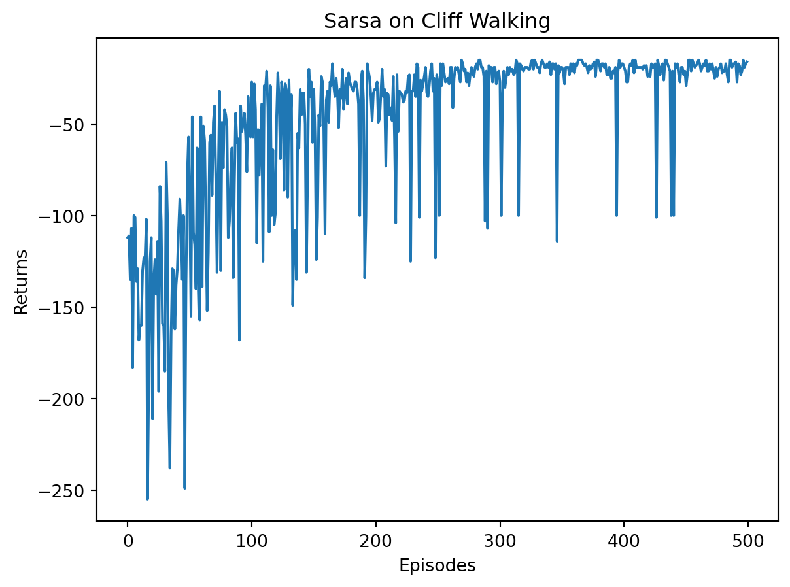
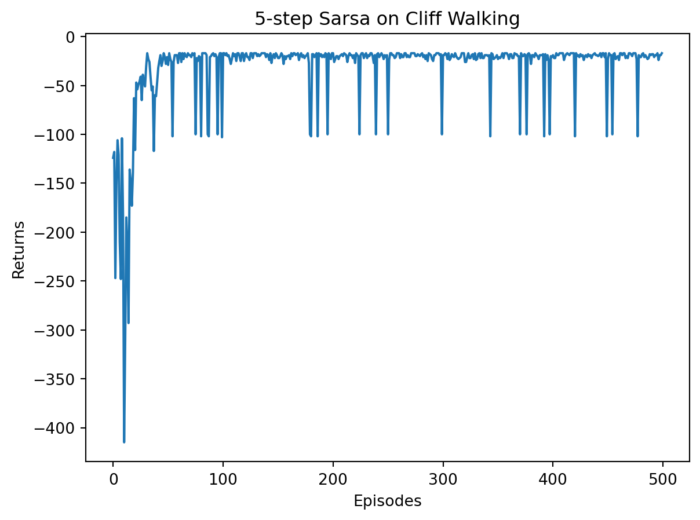
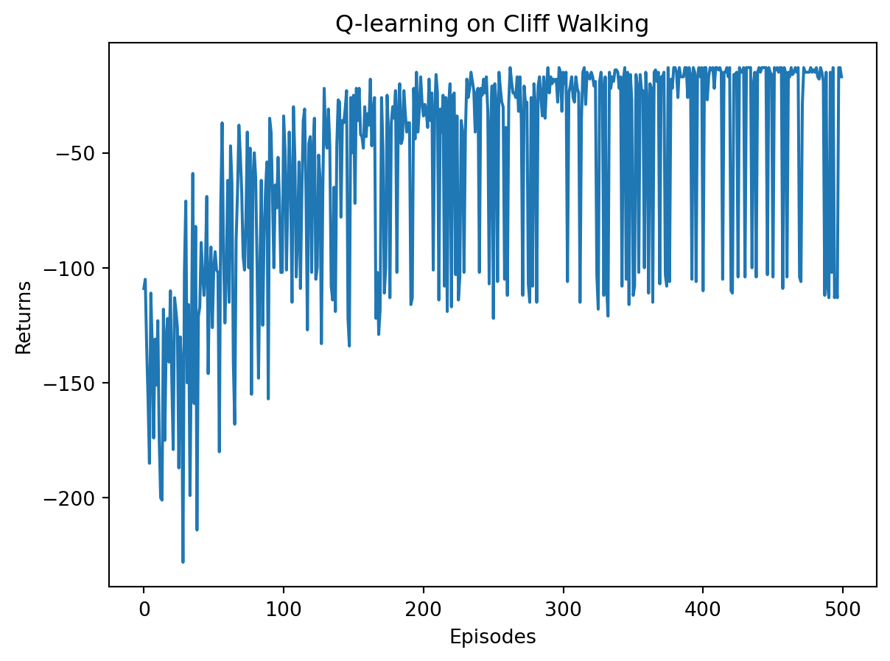

def compute(P, rewards, gamma, states_num):
''' 利用贝尔曼方程的矩阵形式计算解析解,states_num是MRP的状态数 '''
rewards = np.array(rewards).reshape((-1, 1)) #将rewards写成列向量形式
value = np.dot(np.linalg.inv(np.eye(states_num, states_num) - gamma * P),
rewards)
return value1 马尔可夫决策过程
1.1 马尔可夫奖励过程
在马尔可夫过程的基础上加入奖励函数r和折扣因子\gamma,就可以得到马尔可夫奖励过程（Markov Reward Process, MRP）。一个马尔可夫奖励过程由\langle S,\mathcal{P},r,\gamma\rangle构成。
1.1.1 回报
在一个MRP中，从第t时刻状态S_t开始，直到终止状态时，所有奖励的衰减之和称为回报G_t（Return），公式如下：
G_t=R_t+\gamma R_{t+1}+\gamma^2 R_{t+2}+\dots=\sum_{k=0}^{\infty}\gamma^k R_{t+k}, 其中，R_t表示在时刻t获得的奖励。
1.1.2 价值函数
在MRP中，一个状态的期望回报（即从这个状态出发的未来累积奖励的期望）被称为这个状态的价值（Value）。所有状态的价值就组成了价值函数（Value function），价值函数的输入为某个状态，输出为这个状态的价值。我们将价值函数写成
\begin{aligned} V(s)&=\mathbb{E}\left[G_t\mid S_t=s\right]\\ &= \mathbb{E}\left[ R_t+\gamma R_{t+1}+\gamma^2 R_{t+2} +\dots\mid S_t=s\right]\\ &=\mathbb{E}\left[ R_t+\gamma (R_{t+1}+\gamma R_{t+2} +\dots)\mid S_t=s\right]\\ &=\mathbb{E}\left[ R_t+\gamma G_{t+1}\mid S_t=s \right]\\ &=\mathbb{E}\left[ R_t+\gamma V(S_{t+1})\mid S_t=s \right] \end{aligned}
在上式的最后一个等号中，一方面，即时奖励的期望正是奖励函数的输出，即\mathbb{E}\left[ R_t\mid S_t=s \right]=r(s);另一方面，等式中剩余部分\mathbb{E}\left[\gamma V(S_{t+1})\mid S_t=s\right]可以根据从状态s出发的转移概率得到，即
V(s)=r(s)+\gamma \sum_{s'\in \mathcal{S}}p(s'\mid s)V(s')
上式就是MRP中非常有名的贝尔曼方程（Bellman equation），对每一个状态都成立。若通过矩阵运算可以得到以下解析解：
\begin{aligned} \mathcal{V}&=\mathcal{R}+\gamma\mathcal{P}\mathcal{V}\\ \mathcal{V}&=(I-\gamma\mathcal{P})^{-1}\mathcal{R} \end{aligned} 其中\mathcal{V,R,P}均为向量或矩阵。以上解析解的计算复杂度是O(n^3),其中n是状态个数，因此这种方法只适用于很小的MRP。求解较大规模的MRP奖励过程中的价值函数时，可以使用动态规划、蒙特卡洛、时序差分，这些方法将在之后的章节介绍。
接下来编写代码来实现求解价值函数的解析解方法，并据此计算该马尔可夫奖励过程中所有状态的价值。
1.2 马尔可夫决策过程
如果有一个外界的“刺激”来共同改变这个随机过程，就有了马尔可夫决策过程（MDP）。我们将这个来自外界的刺激称为智能体（Agent）的动作，在MRP的基础上加入动作，就得到了MDP。MDP有元组\langle \mathcal{S,A,P},r,\gamma\rangle构成。
1.2.1 策略
智能体的策略（Policy）通常用字母\pi表示。策略\pi(a|s)=P(A_t=a|S_t=s)是一个函数，表示在输入状态s情况下采取动作a的概率。当一个策略是确定性策略（Deterministic policy）时，它在每个状态只输出一个确定性的动作，即只有该动作的概率为1,其他动作的概率为0; 当一个策略是随机性策略（Stochastic policy）时，它在每个状态时输出的是关于动作的概率分布，然后根据该分布进行采样就可以得到一个动作。
在 MDP 中，由于马尔可夫性质的存在，策略只需要与当前状态有关，不需要考虑历史状态。回顾一下在 MRP 中的价值函数，在 MDP 中也同样可以定义类似的价值函数。但此时的价值函数与策略有关，这意为着对于两个不同的策略来说，它们在同一个状态下的价值也很可能是不同的。这很好理解，因为不同的策略会采取不同的动作，从而之后会遇到不同的状态，以及获得不同的奖励，所以它们的累积奖励的期望也就不同，即状态价值不同。
1.2.2 状态价值函数
我们用V^{\pi}(s)表示在MDP中基于策略\pi的状态价值函数（State-value function），定义在从状态s出发遵循策略\pi能获得的期望回报，数学表达为
V^{\pi}(s)=\mathbb{E}_{\pi}[G_t|S_t=s]
1.2.3 动作价值函数
不同于MRP，MDP中由于动作的存在我们定义一个动作价值函数（Action-value function）。我们用Q^{\pi}(s,a)表示在MDP遵循策略\pi时，对当前状态s执行动作a得到的期望回报：
Q^{\pi}(s,a)=\mathbb{E}_{\pi}[G_t|S_t=s,A_t=a]
状态价值函数和动作价值函数之间的关系：
在使用策略\pi时，状态s的价值等于在该状态下基于策略\pi采取所有动作的概率与相应价值相乘再求和的结果：
V^{\pi}(s)=\sum_{a\in\mathcal{A}}\pi(a|s)Q^{\pi}(s,a)
在使用策略\pi时，状态s下采取动作a的价值等于即时奖励加上经过衰减后的所有可能的下一个状态转移概率与相应价值的乘积：
Q^{\pi}(s,a)=r(s,a)+\gamma\sum_{s'\in\mathcal{S}}P(s'|s,a)V^{\pi}(s')
1.2.4 贝尔曼期望方程
在贝尔曼方程中加上期望二字是为了与接下来的贝尔曼最优方程进行区分。我们通过加单推到就可以分别得到两个价值函数的贝尔曼期望方程（Bellman Expect Equation）：
\begin{aligned} V^{\pi}(s)&=\mathbb{E}_{\pi}\left[R_t+\gamma V^{\pi}(S_{t+1})|S_t=s\right]\\ &=\sum_{a\in\mathcal{A}}\pi(a|s)\left( r(s,a)+\gamma\sum_{s'\in\mathcal{S}}p(s'|s,a)V^{\pi}(s')\right)\\ \\ Q^{\pi}(s,a)&=\mathbb{E}_{\pi}\left[R_t+\gamma Q^{\pi}(S_{t+1},A_{t+1}|S_t=s, A_t=a)\right]\\ &=r(s,a)+\gamma\sum_{s'\in\mathcal{S}}p(s'|s,a)\sum_{a'\in\mathcal{A}}\pi(a'|s')Q^{\pi}(s',a) \end{aligned}
价值函数和贝尔曼方程是强化学习非常重要的组成部分，之后的一些强化学习算法都是据此推导出来的。
现在我们考虑一个MDP的简单例子如 图 1 ，其中每个绿色圆圈代表一个状态，一共有s_1\sim s_5这5个状态。黑色实线箭头代表可以采取的动作，黄色小圆圈代表动作。需要注意的是，并非在每个状态都能采取所有动作，例如在s_1,智能体只能采取”保持s_1“和”前往s_2“这两个动作，无法采取其他动作。
每个黄色小圆圈旁的红色数字代表在某个状态下采取某个动作能获得的奖励。虚线箭头代表采取动作后可能转移到的状态，箭头边上的带方框的数字代表转移概率，如果没有数字则表示转移概率为1.例如，在s_2下，如果采取动作”前往s_3“就能得到奖励-2,并且以概率1转移到s_3;在s_4下，如果采取”概率前往”这个动作，就能得到奖励1,并且会分别以概率0.2,0.4,0.4转移到s_2,s_3或s_4.

接下来我们编写代码来表示 图 1 中的MDP，并定义两个策略，第一个策略是一个完全随机策略，即在每个状态下，智能体会以同样的概率选取它可能采取的动作。例如，在s_1下智能体会以0.5,0.5的概率选取动作”保持s_1“和”前往s_2“.第二个策略是一个提前设定的策略。
import numpy as np
S = ["s1", "s2", "s3", "s4", "s5"] # 状态集合
A = ["保持s1", "前往s1", "前往s2", "前往s3", "前往s4", "前往s5", "概率前往"] # 动作集合
# 状态转移函数
P = {
"s1-保持s1-s1": 1.0,
"s1-前往s2-s2": 1.0,
"s2-前往s1-s1": 1.0,
"s2-前往s3-s3": 1.0,
"s3-前往s4-s4": 1.0,
"s3-前往s5-s5": 1.0,
"s4-前往s5-s5": 1.0,
"s4-概率前往-s2": 0.2,
"s4-概率前往-s3": 0.4,
"s4-概率前往-s4": 0.4,
}
# 奖励函数
R = {
"s1-保持s1": -1,
"s1-前往s2": 0,
"s2-前往s1": -1,
"s2-前往s3": -2,
"s3-前往s4": -2,
"s3-前往s5": 0,
"s4-前往s5": 10,
"s4-概率前往": 1,
}
gamma = 0.5 # 折扣因子
MDP = (S, A, P, R, gamma)
# 策略1,随机策略
Pi_1 = {
"s1-保持s1": 0.5,
"s1-前往s2": 0.5,
"s2-前往s1": 0.5,
"s2-前往s3": 0.5,
"s3-前往s4": 0.5,
"s3-前往s5": 0.5,
"s4-前往s5": 0.5,
"s4-概率前往": 0.5,
}
# 策略2
Pi_2 = {
"s1-保持s1": 0.6,
"s1-前往s2": 0.4,
"s2-前往s1": 0.3,
"s2-前往s3": 0.7,
"s3-前往s4": 0.5,
"s3-前往s5": 0.5,
"s4-前往s5": 0.1,
"s4-概率前往": 0.9,
}
# 把输入的两个字符串通过“-”连接,便于使用上述定义的P、R变量
def join(str1, str2):
return str1 + '-' + str2接下来我们想要计算该MDP下，一个策略\pi的状态价值函数。我们现有的工具是MRP的解析解方法，一个自然的想法是给定一个MDP和一个策略\pi,我们是否可以将其转化为一个MRP？答案是肯定的，我们可以将策略的动作选择进行边缘化（Marginalization），就可以得到没有动作的MRP了。具体来说，对于某一个状态，我们根据策略所有动作的概率进行加权，得到的奖励和就可以认为是一个MRP在该状态下的奖励，即： r'(s)=\sum_{a\in\mathcal{A}}\pi(a|s)r(s,a)
同理，我们计算采取动作的概率与使s转移到s'的概率的乘积，再将这些乘积相加，其和就是一个MRP的状态从s转移至s'的概率：
P'(s'|s)=\sum_{a\in\mathcal{A}}\pi(a|s)
于是，我们构建得到了一个MRP:\langle \mathcal{S},P',r',\gamma\rangle.根据价值函数的定义可以发现，转化前的 MDP 的状态价值函数和转化后的 MRP 的价值函数是一样的。于是我们可以用 MRP 中计算价值函数的解析解来计算这个 MDP 中该策略的状态价值函数。
接下来，我们用代码实现该方法，计算用随即策略Pi_1时的状态价值函数，为了简单起见，我们将直接给出转化后的MRP的状态转移矩阵和奖励函数。
gamma = 0.5
# 转化后的MRP的状态转移矩阵
P_from_mdp_to_mrp = [
[0.5, 0.5, 0.0, 0.0, 0.0],
[0.5, 0.0, 0.5, 0.0, 0.0],
[0.0, 0.0, 0.0, 0.5, 0.5],
[0.0, 0.1, 0.2, 0.2, 0.5],
[0.0, 0.0, 0.0, 0.0, 1.0],
]
P_from_mdp_to_mrp = np.array(P_from_mdp_to_mrp)
R_from_mdp_to_mrp = [-0.5, -1.5, -1.0, 5.5, 0]
V = compute(P_from_mdp_to_mrp, R_from_mdp_to_mrp, gamma, 5)
print("MDP中每个状态价值分别为\n", V)MDP中每个状态价值分别为
[[-1.22555411]
[-1.67666232]
[ 0.51890482]
[ 6.0756193 ]
[ 0. ]]知道了状态价值函数V^{\pi}(s)后，我们可以计算动作价值函数Q^{\pi}(s,a).例如(s_4,\text{概率前往})的动作价值为2.152，根据以下公式可以计算得到：
Q^{\pi}(s,a)=r(s,a)+\gamma\sum_{s'\in\mathcal{S}}P(s'|s,a)V^{\pi}(s')
这个 MRP 解析解的方法在状态动作集合比较大的时候不是很适用，那有没有其他的方法呢？ 章节 2 将介绍用动态规划算法来计算得到价值函数。 章节 1.3 将介绍用蒙特卡洛方法来近似估计这个价值函数，用蒙特卡洛方法的好处在于我们不需要知道 MDP 的状态转移函数和奖励函数，它可以得到一个近似值，并且采样数越多越准确。
1.3 蒙特卡洛方法
蒙特卡洛方法（Monte-Carlo methods）也被称为统计模拟方法，是一种基于概率统计的数值计算方法。运用MC方法时我们通常使用重复随机抽样，然后运用概率统计方法来从抽样结果中归纳出我们想求的目标的数值估计。一个简单的例子是用蒙特卡洛方法来计算圆的面积。例如，在正方形内部随机产生若干个点，细数落在圆中点的个数，圆的面积与正方形面积之比就等于圆中点的个数与正方形中点的个数之比。如果我们随机产生的点的个数越多，计算得到圆的面积就越接近于真实的圆的面积。
我们现在介绍如何用蒙特卡洛方法来估计一个策略在一个马尔可夫决策过程中的状态价值函数。回忆一下，一个状态的价值是它的期望回报，那么一个很直观的想法就是用策略在 MDP 上采样很多条序列，计算从这个状态出发的回报再求其期望就可以了，公式如下：
V^{\pi}(s)=\mathbb{E}_{\pi}\left[ G_t|S_t=s \right]\approx \frac{1}{N}\sum_{i=1}^N G_t^{(i)}
在一条序列中，可能没有出现过这个状态，可能只出现过一次这个状态，也可能出现过很多次这个状态。我们介绍的蒙特卡洛价值估计方法会在该状态每一次出现时计算它的回报。还有一种选择是一条序列只计算一次回报，也就是这条序列第一次出现该状态时计算后面的累积奖励，而后面再次出现该状态时，该状态就被忽略了。假设我们现在用策略\pi从s开始采样序列，据此来计算状态价值。我们为每一个状态维护一个计数器和总回报，计算状态价值的具体过程如下所示。
使用策略\pi 采样若干条序列： s_0^{(i)}\overset{a_0^{(i)}}{\rightarrow} r_0^{(i)},s_1^{(i)}\overset{a_1^{(i)}}{\rightarrow} r_1^{(i)}, s_2^{(i)}\overset{a_2^{(i)}}{\rightarrow},...,\overset{a_{T-1}^{(i)}}{\rightarrow} r_{T-1}^{(i)},s_T^{(i)}
对每一条序列中的每一时间步t的状态s进行以下操作：
- 更新状态s的计数器N(s)\leftarrow N(s)+1;
- 更新状态s的总回报M(s)\leftarrow M(s)+G_t;
每一个状态的价值被估计为回报的平均值V(s)=\=M(s)/N(s).
根据大数定律，当N(s)\rightarrow \infty,有V(s)\rightarrow V^{\pi}(s). 计算回报的期望时，除了可以把所有的回报加起来除以次数，还有一种增量更新的方法。对于每个状态s和对应回报G,进行如下计算：
- N(s)\leftarrow N(s)+1
- V(s)\leftarrow V(s)+\frac{G-V(s)}{N(s)}
接下来我们用代码定义一个采样函数，采样函数需要遵守状态转移矩阵和相应策略，每次将(s,a,r,s_next)元组放入序列中，直到到达终止序列。然后我们通过该函数，用随即策略在 图 1 的MDP中随机采样几条序列。
def sample(MDP, Pi, timestep_max, number):
''' 采样函数,策略Pi,限制最长时间步timestep_max,总共采样序列数number '''
S, A, P, R, gamma = MDP
episodes = []
for _ in range(number):
episode = []
timestep = 0
s = S[np.random.randint(4)] # 随机选择一个除s5以外的状态s作为起点
# 当前状态为终止状态或者时间步太长时,一次采样结束
while s != "s5" and timestep <= timestep_max:
timestep += 1
rand, temp = np.random.rand(), 0
# 在状态s下根据策略选择动作
for a_opt in A:
temp += Pi.get(join(s, a_opt), 0)
if temp > rand:
a = a_opt
r = R.get(join(s, a), 0)
break
rand, temp = np.random.rand(), 0
# 根据状态转移概率得到下一个状态s_next
for s_opt in S:
temp += P.get(join(join(s, a), s_opt), 0)
if temp > rand:
s_next = s_opt
break
episode.append((s, a, r, s_next)) # 把（s,a,r,s_next）元组放入序列中
s = s_next # s_next变成当前状态,开始接下来的循环
episodes.append(episode)
return episodes
# 采样5次,每个序列最长不超过20步
episodes = sample(MDP, Pi_1, 20, 5)
print('第一条序列\n', episodes[0])
print('第二条序列\n', episodes[1])
print('第五条序列\n', episodes[4])第一条序列
[('s1', '前往s2', 0, 's2'), ('s2', '前往s1', -1, 's1'), ('s1', '保持s1', -1, 's1'), ('s1', '前往s2', 0, 's2'), ('s2', '前往s3', -2, 's3'), ('s3', '前往s5', 0, 's5')]
第二条序列
[('s3', '前往s4', -2, 's4'), ('s4', '概率前往', 1, 's3'), ('s3', '前往s5', 0, 's5')]
第五条序列
[('s1', '保持s1', -1, 's1'), ('s1', '保持s1', -1, 's1'), ('s1', '保持s1', -1, 's1'), ('s1', '保持s1', -1, 's1'), ('s1', '前往s2', 0, 's2'), ('s2', '前往s1', -1, 's1'), ('s1', '前往s2', 0, 's2'), ('s2', '前往s3', -2, 's3'), ('s3', '前往s4', -2, 's4'), ('s4', '前往s5', 10, 's5')]# 对所有采样序列计算所有状态的价值
def MC(episodes, V, N, gamma):
for episode in episodes:
G = 0
for i in range(len(episode) - 1, -1, -1): #一个序列从后往前计算
(s, a, r, s_next) = episode[i]
G = r + gamma * G
N[s] = N[s] + 1
V[s] = V[s] + (G - V[s]) / N[s]
timestep_max = 20
# 采样1000次,可以自行修改
episodes = sample(MDP, Pi_1, timestep_max, 1000)
gamma = 0.5
V = {"s1": 0, "s2": 0, "s3": 0, "s4": 0, "s5": 0}
N = {"s1": 0, "s2": 0, "s3": 0, "s4": 0, "s5": 0}
MC(episodes, V, N, gamma)
print("使用蒙特卡洛方法计算MDP的状态价值为\n", V)使用蒙特卡洛方法计算MDP的状态价值为
{'s1': -1.1920298683502757, 's2': -1.6823415654521157, 's3': 0.5219282166886301, 's4': 6.0421585314201565, 's5': 0}可以看到用蒙特卡洛方法估计得到的状态价值和我们用 MRP 解析解得到的状态价值是很接近的。这得益于我们采样了比较多的序列，感兴趣的读者可以尝试修改采样次数，然后观察蒙特卡洛方法的结果。
1.4 最优策略
强化学习的目标通常是找到一个策略，使得智能体从初始状态出发能获得最多的期望回报。我们首先定义策略之间的偏序关系：当且仅当对于任意状态s都有V^{\pi}(s)> V^{\pi'}(s), 记\pi>\pi'. 于是在有限状态和动作集合的MDP中至少存在一个策略比其他所有策略都好或者至少存在一个策略不差于其他所有策略，这个策略就是最优策略（Optimal policy）。最优策略可能有很多个，我们都将其表示为\pi^*(s).
最优策略都有相同的状态价值函数，我们称之为最有状态价值函数，表示为： V^*(s)=\max_{\pi} V^{\pi}(s),\forall s\in\mathcal{S}
同理我们定义最优动作价值函数： Q^*(s,a)=\max_{\pi}Q^{\pi}(s,a),\forall s\in\mathcal{S},a\in\mathcal{A}
为了使Q^*(s,a)最大，我们需要在当前状态动作对(s,a)之后都执行最优策略，于是我们得到了最有状态价值函数和最优动作价值函数之间的关系：
Q^\pi{s,a}=r(s,a)+\gamma\sum_{s\in\mathcal{S}}P(s'|s,a)V^*(s')
这与在普通策略下的状态价值函数和动作价值函数之间的关系是一样的。另一方面，最优状态价值是选择此时使最优动作价值最大的那一个动作时的状态价值： V^*(s)=\max_{a\in\mathcal{A}}Q^*(s,a)
1.4.1 贝尔曼最优方程
根据V^*(s)和Q^*(s,a)的关系，我们可以得到贝尔曼最优方程（Bellman optimality equation）：
\begin{aligned} V^*(s)&=\max_{a\in\mathcal{A}}\left\{ r(s,a)+\gamma\sum_{s'\in\mathcal{S}}p(s'|s,a)V^*(s')\right\}\\ Q^*(s,a)=r(s,a)+\gamma\sum_{s'\in \mathcal{S}}p(s'|s,a)\max_{a'\in\mathcal{A}}Q^*(s',a') \end{aligned}
章节 2 将介绍如何用动态规划算法得到最优策略。
1.5 总结
马尔可夫决策过程是强化学习中的基础概念，强化学习中的环境就是一个马尔可夫决策过程。我们接下来将要介绍的强化学习算法通常都是在求解马尔可夫决策过程中的最优策略。
2 动态规划算法
动态规划（dynamic programming）是程序设计算法中非常重要的内容，能够高效解决一些经典问题，例如背包问题和最短路径规划。动态规划的基本思想是将待求解问题分解成若干个子问题，先求解子问题，然后从这些子问题的解得到目标问题的解。动态规划会保存已解决的子问题的答案，在求解目标问题的过程中，需要这些子问题答案时就可以直接利用，避免重复计算。本章介绍如何用动态规划的思想来求解在马尔可夫决策过程中的最优策略。
基于动态规划的强化学习算法主要有两种：一是策略迭代（policy iteration），二是价值迭代（value iteration）。其中，策略迭代由两部分组成：策略评估（policy evaluation）和策略提升（policy improvement）。具体来说，策略迭代中的策略评估使用贝尔曼期望方程来得到一个策略的状态价值函数，这是一个动态规划的过程；而价值迭代直接使用贝尔曼最优方程来进行动态规划，得到最终的最优状态价值。
不同于 章节 1.3 介绍的蒙特卡洛方法和 章节 3 将要介绍的时序差分算法，基于动态规划的这两种强化学习算法要求事先知道环境的状态转移函数和奖励函数，也就是需要知道整个马尔可夫决策过程。在这样一个白盒环境中，不需要通过智能体和环境的大量交互来学习，可以直接用动态规划求解状态价值函数。但是，现实中的白盒环境很少，这也是动态规划算法的局限之处，我们无法将其运用到很多实际场景中。另外，策略迭代和价值迭代通常只适用于有限马尔可夫决策过程，即状态空间和动作空间是离散且有限的。
3 时序差分算法
3.1 简介
章节 2 介绍的动态规划算法要求马尔可夫决策过程是已知的，即要求与智能体交互的环境是完全已知的（例如迷宫或者给定规则的网格世界）。在此条件下，智能体其实并不需要和环境真正交互来采样数据，直接用动态规划算法就可以解出最优价值或策略。这就好比对于有监督学习任务，如果直接显式给出了数据的分布公式，那么也可以通过在期望层面上直接最小化模型的泛化误差来更新模型参数，并不需要采样任何数据点。
但这在大部分场景下并不现实，机器学习的主要方法都是在数据分布未知的情况下针对具体的数据点来对模型做出更新的。对于大部分强化学习现实场景（例如电子游戏或者一些复杂物理环境），其马尔可夫决策过程的状态转移概率是无法写出来的，也就无法直接进行动态规划。在这种情况下，智能体只能和环境进行交互，通过采样到的数据来学习，这类学习方法统称为无模型的强化学习（model-free reinforcement learning）。
不同于动态规划算法，无模型的强化学习算法不需要事先知道环境的奖励函数和状态转移函数，而是直接使用和环境交互的过程中采样到的数据来学习，这使得它可以被应用到一些简单的实际场景中。本章将要讲解无模型的强化学习中的两大经典算法：Sarsa 和 Q-learning，它们都是基于时序差分（temporal difference，TD）的强化学习算法。同时，本章还会引入一组概念：在线策略学习和离线策略学习。通常来说，在线策略学习要求使用在当前策略下采样得到的样本进行学习，一旦策略被更新，当前的样本就被放弃了，就好像在水龙头下用自来水洗手；而离线策略学习使用经验回放池将之前采样得到的样本收集起来再次利用，就好像使用脸盆接水后洗手。因此，离线策略学习往往能够更好地利用历史数据，并具有更小的样本复杂度（算法达到收敛结果需要在环境中采样的样本数量），这使其被更广泛地应用。
3.2 时序差分方法
时序差分是一种用来估计一个策略的价值函数的方法，它结合了蒙特卡洛和动态规划算法的思想。时序差分方法和蒙特卡洛的相似之处在于可以从样本数据中学习，不需要事先知道环境；和动态规划的相似之处在于根据贝尔曼方程的思想，利用后续状态的价值估计来更新当前状态的价值估计。回顾一下蒙特卡洛方法对价值函数的增量更新方式：
V(s_t)\leftarrow V(s_t)+\alpha\left[ G_t-V(s_t) \right]
这里我们将@sec-mc 中的\frac{1}{N(s)}替换成了\alpha,表示对价值估计更新的步长。可以将\alpha取为一个常数，此时更新方式不再像MC方法那样严格取期望。MC方法必须要等整个序列结束之后才能计算得到这一次的回报G_t,而时序差分方法只需要当前步结束即可计算。具体来说，时序差分算法用当前获得的奖励加上下一个状态的价值估计来作为在当前状态会获得的回报，即：
V(s_t)\leftarrow V(s_t)+\alpha\left[ R_t+\gamma V(s_{t+1})-V(s_t) \right] 其中R_t+\gamma V(s_{t+1})-V(s_t)通常被称为时序差分误差。时序差分算法将其与步长的乘积作为状态价值的更新量。可以用R_t+\gamma V(s_{t+1})来代替G_t的原因是： \begin{aligned} V^{\pi}(s)&=\mathbb{E}_{\pi}\left[ G_t|S_t=s \right]\\ &=\mathbb{E}_\pi\left[ \sum_{k=0}^{\infty}\gamma^k R_{t+k}|S_t=s \right]\\ &=\mathbb{E}_{\pi}\left[ R_t+\gamma\sum_{k=0}^{\infty}\gamma^kR_{t+k+1}| S_t=s \right]\\ &=\mathbb{E}_{\pi}\left[ R_t+\gamma V^{\pi}(s_{t+1})| S_t=s \right] \end{aligned}
因此MC方法将上式第一行作为更新的目标而TD算法将上式最后一行作为更新的目标。于是，再用策略和环境交互时，每采样一步，我们就可以用时序差分算法来更新状态价值估计。时序差分算法用到了V(s_{t+1})的估计值，可以证明它最终收敛到策略\pi的价值函数，我们在这里不对此进行展开说明。
3.3 Sarsa算法
既然我们可以用时序差分方法来估计价值函数，那一个很自然的问题是，我们能否用类似策略迭代的方法来进行强化学习。策略评估已经可以通过时序差分算法实现，那么在不知道奖励函数和状态转移函数的情况下该怎么进行策略提升呢？答案是可以直接用时序差分算法来估计动作价值函数Q:
Q(s_t,a_t)\leftarrow Q(s_t,a_t)+\alpha\left[ R_t+\gamma Q(s_{t+1},a_{t+1})-Q(s_t,a_t) \right] 然后我们用贪婪算法来选取在某个状态下动作价值最大的那个动作，即\arg\max_{a}Q(s,a). 这样似乎已经形成了一个完整的强化学习算法： 用贪婪算法根据动作价值选取动作来和环境交互，再根据得到的数据用时序差分算法更新动作价值估计。
然而这个简单的算法存在两个需要进一步考虑的问题。第一，如果要用时序差分算法来准确地估计策略的状态价值函数，我们需要用极大量的样本来进行更新。但实际上我们可以忽略这一点，直接用一些样本来评估策略，然后就可以更新策略了。我们可以这么做的原因是策略提升可以在策略评估未完全进行的情况进行；第二，如果在策略提升中一直根据贪婪算法得到一个确定性策略，可能会导致某些状态动作对(s,a)永远没有在序列中出现以至于无法对其动作价值进行估计，进而无法保证策略提升后的策略比之前的好。
简单常用的解决方案是不再一味使用贪婪算法，而是采用\epsilon-贪婪策略：有1-\epsilon的概率采用动作价值最大的那个动作（贪婪），另外有\epsilon的概率从动作空间中随机选取一个动作（探索），其公式表示为：
\pi(a|s)= \begin{cases} \frac{\epsilon}{|\mathcal{A}|}+1-\epsilon &\text{如果}a=\arg\max_{a'}Q(s,a')\\ \frac{\epsilon}{|\mathcal{A}|}& 其他动作 \end{cases}
现在，我们就可以得到一个实际的基于时序差分方法的强化学习算法。这个算法被称为 Sarsa，因为它的动作价值更新用到了当前状态s、当前动作a、获得的奖励r、下一个状态s'和下一个动作a',将这些符号拼接后就得到了算法名称，这是一种On-Policy(在线策略，a_{t+1}和a_t来自于同一策略)的时序差分强化学习算法。
现在我们在悬崖漫步环境下尝试Sarsa算法。首先给出悬崖漫步环境的代码，此时环境不需要提供奖励函数和状态转移函数，而是需要提供一个和智能体进行交互的函数step(),该函数将智能体的动作作为输入，将奖励和下一个状态输出给智能体。
import matplotlib.pyplot as plt
import numpy as np
from tqdm import tqdm # tqdm是显示循环进度条的库
class CliffWalkingEnv:
def __init__(self, ncol, nrow):
self.nrow = nrow
self.ncol = ncol
self.x = 0 # 记录当前智能体位置的横坐标
self.y = self.nrow - 1 # 记录当前智能体位置的纵坐标
def step(self, action): # 外部调用这个函数来改变当前位置
# 4种动作, change[0]:上, change[1]:下, change[2]:左, change[3]:右。坐标系原点(0,0)
# 定义在左上角
change = [[0, -1], [0, 1], [-1, 0], [1, 0]]
self.x = min(self.ncol - 1, max(0, self.x + change[action][0]))
self.y = min(self.nrow - 1, max(0, self.y + change[action][1]))
next_state = self.y * self.ncol + self.x
reward = -1
done = False
if self.y == self.nrow - 1 and self.x > 0: # 下一个位置在悬崖或者目标
done = True
if self.x != self.ncol - 1:
reward = -100
return next_state, reward, done
def reset(self): # 回归初始状态,坐标轴原点在左上角
self.x = 0
self.y = self.nrow - 1
return self.y * self.ncol + self.x然后我们来实现Sarsa算法，主要维护一个表格Q_table(),用来存储当前策略下所有状态动作对的价值，在用Sarsa算法和环境交互时，用\epsilon-贪婪策略进行采样，在更新Sarsa算法时，使用时序差分的公式。我们默认终止状态时所有动作的价值都是0,这些价值在初始化为0后就不会进行更新。
class Sarsa:
""" Sarsa算法 """
def __init__(self, ncol, nrow, epsilon, alpha, gamma, n_action=4):
self.Q_table = np.zeros([nrow * ncol, n_action]) # 初始化Q(s,a)表格
self.n_action = n_action # 动作个数
self.alpha = alpha # 学习率
self.gamma = gamma # 折扣因子
self.epsilon = epsilon # epsilon-贪婪策略中的参数
def take_action(self, state): # 选取下一步的操作,具体实现为epsilon-贪婪
if np.random.random() < self.epsilon:
action = np.random.randint(self.n_action)
else:
action = np.argmax(self.Q_table[state])
return action
def best_action(self, state): # 用于打印策略
Q_max = np.max(self.Q_table[state])
a = [0 for _ in range(self.n_action)]
for i in range(self.n_action): # 若两个动作的价值一样,都会记录下来
if self.Q_table[state, i] == Q_max:
a[i] = 1
return a
def update(self, s0, a0, r, s1, a1):
td_error = r + self.gamma * self.Q_table[s1, a1] - self.Q_table[s0, a0]
self.Q_table[s0, a0] += self.alpha * td_error接下来我们就在悬崖漫步环境中运行Sarsa算法，一起来看看结果吧！
ncol = 12
nrow = 4
env = CliffWalkingEnv(ncol, nrow)
np.random.seed(0)
epsilon = 0.1
alpha = 0.1
gamma = 0.9
agent = Sarsa(ncol, nrow, epsilon, alpha, gamma)
num_episodes = 500 # 智能体在环境中运行的序列的数量
return_list = [] # 记录每一条序列的回报
for i in range(10): # 显示10个进度条
# tqdm的进度条功能
with tqdm(total=int(num_episodes / 10), desc='Iteration %d' % i) as pbar:
for i_episode in range(int(num_episodes / 10)): # 每个进度条的序列数
episode_return = 0
state = env.reset()
action = agent.take_action(state)
done = False
while not done:
next_state, reward, done = env.step(action)
next_action = agent.take_action(next_state)
episode_return += reward # 这里回报的计算不进行折扣因子衰减
agent.update(state, action, reward, next_state, next_action)
state = next_state
action = next_action
return_list.append(episode_return)
if (i_episode + 1) % 10 == 0: # 每10条序列打印一下这10条序列的平均回报
pbar.set_postfix({
'episode':
'%d' % (num_episodes / 10 * i + i_episode + 1),
'return':
'%.3f' % np.mean(return_list[-10:])
})
pbar.update(1)
episodes_list = list(range(len(return_list)))
plt.plot(episodes_list, return_list)
plt.xlabel('Episodes')
plt.ylabel('Returns')
plt.title('Sarsa on {}'.format('Cliff Walking'))
plt.show()
我们发现，随着训练的进行，Sarsa 算法获得的回报越来越高。在进行 500 条序列的学习后，可以获得 −20 左右的回报，此时已经非常接近最优策略了。然后我们看一下 Sarsa 算法得到的策略在各个状态下会使智能体采取什么样的动作。
def print_agent(agent, env, action_meaning, disaster=[], end=[]):
for i in range(env.nrow):
for j in range(env.ncol):
if (i * env.ncol + j) in disaster:
print('****', end=' ')
elif (i * env.ncol + j) in end:
print('EEEE', end=' ')
else:
a = agent.best_action(i * env.ncol + j)
pi_str = ''
for k in range(len(action_meaning)):
pi_str += action_meaning[k] if a[k] > 0 else 'o'
print(pi_str, end=' ')
print()
action_meaning = ['^', 'v', '<', '>']
print('Sarsa算法最终收敛得到的策略为：')
print_agent(agent, env, action_meaning, list(range(37, 47)), [47])Sarsa算法最终收敛得到的策略为：
ooo> ooo> ooo> ooo> ooo> ooo> ooo> ooo> ooo> ooo> ooo> ovoo
ooo> ooo> ooo> ooo> ooo> ooo> ooo> ooo> ooo> ooo> ooo> ovoo
^ooo ooo> ^ooo ooo> ooo> ooo> ooo> ^ooo ^ooo ooo> ooo> ovoo
^ooo **** **** **** **** **** **** **** **** **** **** EEEE 可以发现Sarsa算法会采取比较远离悬崖的策略来抵达目标，比较保守。
3.4 多步Sarsa算法
蒙特卡洛方法利用当前状态之后每一步的奖励而不使用任何价值估计，时序差分算法只利用一步奖励和下一个状态的价值估计。那它们之间的区别是什么呢？总的来说，蒙特卡洛方法是无偏（unbiased）的，但是具有比较大的方差，因为每一步的状态转移都有不确定性，而每一步状态采取的动作所得到的不一样的奖励最终都会加起来，这会极大影响最终的价值估计；时序差分算法具有非常小的方差，因为只关注了一步状态转移，用到了一步的奖励，但是它是有偏的，因为用到了下一个状态的价值估计而不是其真实的价值。那有没有什么方法可以结合二者的优势呢？答案是多步时序差分！多步时序差分的意思是使用n步的奖励，然后使用之后状态的价值估计。用公式表示，将 G_t=R_t+\gamma Q(s_{t+1},a_{t+1}) 替换成 G_t=R_t+\gamma R_{t+1}+\dots+\gamma^{n-1}R_{t+n-1}+\gamma^n Q(s_{t+n},a_{t+n}) 于是Sarsa算法中的动作价值函数更新公式变为 Q(s_t,a_t)\leftarrow Q(s_t,a_t)+\alpha\left[ R_t+\gamma R_{t+1}+\dots+\gamma^{n-1}R_{t+n-1}+\gamma^n Q(s_{t+n},a_{t+n})-Q(s_t,a_t) \right] 接下来将用代码实现n步Sarsa算法，在Sarsa代码基础上进行修改，引入多步时序差分计算。
class nstep_Sarsa:
""" n步Sarsa算法 """
def __init__(self, n, ncol, nrow, epsilon, alpha, gamma, n_action=4):
self.Q_table = np.zeros([nrow * ncol, n_action])
self.n_action = n_action
self.alpha = alpha
self.gamma = gamma
self.epsilon = epsilon
self.n = n # 采用n步Sarsa算法
self.state_list = [] # 保存之前的状态
self.action_list = [] # 保存之前的动作
self.reward_list = [] # 保存之前的奖励
def take_action(self, state):
if np.random.random() < self.epsilon:
action = np.random.randint(self.n_action)
else:
action = np.argmax(self.Q_table[state])
return action
def best_action(self, state): # 用于打印策略
Q_max = np.max(self.Q_table[state])
a = [0 for _ in range(self.n_action)]
for i in range(self.n_action):
if self.Q_table[state, i] == Q_max:
a[i] = 1
return a
def update(self, s0, a0, r, s1, a1, done):
self.state_list.append(s0)
self.action_list.append(a0)
self.reward_list.append(r)
if len(self.state_list) == self.n: # 若保存的数据可以进行n步更新
G = self.Q_table[s1, a1] # 得到Q(s_{t+n}, a_{t+n})
for i in reversed(range(self.n)):
G = self.gamma * G + self.reward_list[i] # 不断向前计算每一步的回报
# 如果到达终止状态,最后几步虽然长度不够n步,也将其进行更新
if done and i > 0:
s = self.state_list[i]
a = self.action_list[i]
self.Q_table[s, a] += self.alpha * (G - self.Q_table[s, a])
s = self.state_list.pop(0) # 将需要更新的状态动作从列表中删除,下次不必更新
a = self.action_list.pop(0)
self.reward_list.pop(0)
# n步Sarsa的主要更新步骤
self.Q_table[s, a] += self.alpha * (G - self.Q_table[s, a])
if done: # 如果到达终止状态,即将开始下一条序列,则将列表全清空
self.state_list = []
self.action_list = []
self.reward_list = []np.random.seed(0)
n_step = 5 # 5步Sarsa算法
alpha = 0.1
epsilon = 0.1
gamma = 0.9
agent = nstep_Sarsa(n_step, ncol, nrow, epsilon, alpha, gamma)
num_episodes = 500 # 智能体在环境中运行的序列的数量
return_list = [] # 记录每一条序列的回报
for i in range(10): # 显示10个进度条
#tqdm的进度条功能
with tqdm(total=int(num_episodes / 10), desc='Iteration %d' % i) as pbar:
for i_episode in range(int(num_episodes / 10)): # 每个进度条的序列数
episode_return = 0
state = env.reset()
action = agent.take_action(state)
done = False
while not done:
next_state, reward, done = env.step(action)
next_action = agent.take_action(next_state)
episode_return += reward # 这里回报的计算不进行折扣因子衰减
agent.update(state, action, reward, next_state, next_action,
done)
state = next_state
action = next_action
return_list.append(episode_return)
if (i_episode + 1) % 10 == 0: # 每10条序列打印一下这10条序列的平均回报
pbar.set_postfix({
'episode':
'%d' % (num_episodes / 10 * i + i_episode + 1),
'return':
'%.3f' % np.mean(return_list[-10:])
})
pbar.update(1)
episodes_list = list(range(len(return_list)))
plt.plot(episodes_list, return_list)
plt.xlabel('Episodes')
plt.ylabel('Returns')
plt.title('5-step Sarsa on {}'.format('Cliff Walking'))
plt.show()
通过实验结果可以发现，5步Sarsa算法的收敛速度比单步Sarsa算法更快，我们看下此时的策略表现。
action_meaning = ['^', 'v', '<', '>']
print('5步Sarsa算法最终收敛得到的策略为：')
print_agent(agent, env, action_meaning, list(range(37, 47)), [47])5步Sarsa算法最终收敛得到的策略为：
ooo> ooo> ooo> ooo> ooo> ooo> ooo> ooo> ooo> ooo> ooo> ovoo
^ooo ^ooo ^ooo oo<o ^ooo ^ooo ^ooo ^ooo ooo> ooo> ^ooo ovoo
ooo> ^ooo ^ooo ^ooo ^ooo ^ooo ^ooo ooo> ooo> ^ooo ooo> ovoo
^ooo **** **** **** **** **** **** **** **** **** **** EEEE 我们发现此时多步 Sarsa 算法得到的策略会在最远离悬崖的一边行走，以保证最大的安全性。
3.5 Q-learning 算法
除了 Sarsa，还有一种非常著名的基于时序差分算法的强化学习算法——Q-learning。Q-learning 和 Sarsa 的最大区别在于 Q-learning 的时序差分更新方式为
Q(s_t,a_t)\leftarrow Q(s_t,a_t)+\alpha\left[ R_t+\gamma \max_{a}Q(s_{t+1},a)-Q(s_t,a_t) \right]
我们可以用价值迭代的思想来理解Q-learning, 即Q-learning 是直接在估计Q^*,因为动作价值函数的贝尔曼最优方程是 Q^*(s,a)=r(s,a)+\gamma \sum_{s'\in\mathcal{S}}P(s'|s,a)\max_{a'}Q^*(s',a') 而 Sarsa估计当前\epsilon-贪婪策略的动作价值函数。需要强调的是，Q-learning的更新并非必须使用当前贪心策略\arg\max_{a}Q(s,a)采样得到的数据，因为给定任意(s,a,r,s')都可以直接根据更新公式来更新Q,为了探索，我们通常使用一个\epsilon-贪婪策略采样得到的数据，因为它的更新中用到的Q(s',a')的a'是当前策略在s'下的动作。我们称Sarsa是在线策略（On-policy）算法，称Q-learning是离线策略（Off-policy）算法，这两个概念在强化学习中非常重要。
3.5.1 在线策略与离线策略
我们称采样数据的策略为行为策略（behavior policy），称用这些数据来更新的策略为目标策略（target policy）。在线策略（on-policy）算法表示行为策略和目标策略是同一个策略；而离线策略（off-policy）算法表示行为策略和目标策略不是同一个策略。Sarsa 是典型的在线策略算法，而 Q-learning 是典型的离线策略算法。判断二者类别的一个重要手段是看计算时序差分的价值目标的数据是否来自当前的策略，如 图 2 所示。具体而言：
- 对于Sarsa，它的更新公式必须使用来自当前策略采样得到的五元组(s,a,r,s',a'),因此它是在线策略学习方法； - 对于Q-learning，它的更新公式使用的是四元组(s,a,r,s')来更新当前状态动作对的价值Q(s,a),数据中的s,a是给定的条件，r,s'皆由环境采样得到，该四元组并不需要一定是当前策略采样得到的数据，也可以来自行为策略，因此它是离线策略算法。

在之后的讲解中，我们会注明各个算法分别属于这两类中的哪一类。如前文所述，离线策略算法能够重复使用过往训练样本，往往具有更小的样本复杂度，也因此更受欢迎。
我们接下来仍然在悬崖漫步环境下来实现 Q-learning 算法。
class QLearning:
""" Q-learning算法 """
def __init__(self, ncol, nrow, epsilon, alpha, gamma, n_action=4):
self.Q_table = np.zeros([nrow * ncol, n_action]) # 初始化Q(s,a)表格
self.n_action = n_action # 动作个数
self.alpha = alpha # 学习率
self.gamma = gamma # 折扣因子
self.epsilon = epsilon # epsilon-贪婪策略中的参数
def take_action(self, state): #选取下一步的操作
if np.random.random() < self.epsilon:
action = np.random.randint(self.n_action)
else:
action = np.argmax(self.Q_table[state])
return action
def best_action(self, state): # 用于打印策略
Q_max = np.max(self.Q_table[state])
a = [0 for _ in range(self.n_action)]
for i in range(self.n_action):
if self.Q_table[state, i] == Q_max:
a[i] = 1
return a
def update(self, s0, a0, r, s1):
td_error = r + self.gamma * self.Q_table[s1].max(
) - self.Q_table[s0, a0]
self.Q_table[s0, a0] += self.alpha * td_errornp.random.seed(0)
epsilon = 0.1
alpha = 0.1
gamma = 0.9
agent = QLearning(ncol, nrow, epsilon, alpha, gamma)
num_episodes = 500 # 智能体在环境中运行的序列的数量
return_list = [] # 记录每一条序列的回报
for i in range(10): # 显示10个进度条
# tqdm的进度条功能
with tqdm(total=int(num_episodes / 10), desc='Iteration %d' % i) as pbar:
for i_episode in range(int(num_episodes / 10)): # 每个进度条的序列数
episode_return = 0
state = env.reset()
done = False
while not done:
action = agent.take_action(state)
next_state, reward, done = env.step(action)
episode_return += reward # 这里回报的计算不进行折扣因子衰减
agent.update(state, action, reward, next_state)
state = next_state
return_list.append(episode_return)
if (i_episode + 1) % 10 == 0: # 每10条序列打印一下这10条序列的平均回报
pbar.set_postfix({
'episode':
'%d' % (num_episodes / 10 * i + i_episode + 1),
'return':
'%.3f' % np.mean(return_list[-10:])
})
pbar.update(1)
episodes_list = list(range(len(return_list)))
plt.plot(episodes_list, return_list)
plt.xlabel('Episodes')
plt.ylabel('Returns')
plt.title('Q-learning on {}'.format('Cliff Walking'))
plt.show()
action_meaning = ['^', 'v', '<', '>']
print('Q-learning算法最终收敛得到的策略为：')
print_agent(agent, env, action_meaning, list(range(37, 47)), [47])
Q-learning算法最终收敛得到的策略为：
^ooo ovoo ovoo ^ooo ^ooo ovoo ooo> ^ooo ^ooo ooo> ooo> ovoo
ooo> ooo> ooo> ooo> ooo> ooo> ^ooo ooo> ooo> ooo> ooo> ovoo
ooo> ooo> ooo> ooo> ooo> ooo> ooo> ooo> ooo> ooo> ooo> ovoo
^ooo **** **** **** **** **** **** **** **** **** **** EEEE 需要注意的是，打印出来的回报是行为策略在环境中交互得到的，而不是 Q-learning 算法在学习的目标策略的真实回报。我们把目标策略的行为打印出来后，发现其更偏向于走在悬崖边上，这与 Sarsa 算法得到的比较保守的策略相比是更优的。 但是仔细观察 Sarsa 和 Q-learning 在训练过程中的回报曲线图，我们可以发现，在一个序列中 Sarsa 获得的期望回报是高于 Q-learning 的。这是因为在训练过程中智能体采取基于当前Q(s,a)函数的\epsilon-贪婪策略来平衡探索与利用，Q-learning 算法由于沿着悬崖边走，会以一定概率探索“掉入悬崖”这一动作，而 Sarsa 相对保守的路线使智能体几乎不可能掉入悬崖。
3.6 小结
本章介绍了无模型的强化学习中的一种非常重要的算法——时序差分算法。时序差分算法的核心思想是用对未来动作选择的价值估计来更新对当前动作选择的价值估计，这是强化学习中的核心思想之一。本章重点讨论了 Sarsa 和 Q-learning 这两个最具有代表性的时序差分算法。当环境是有限状态集合和有限动作集合时，这两个算法非常好用，可以根据任务是否允许在线策略学习来决定使用哪一个算法。 值得注意的是，尽管离线策略学习可以让智能体基于经验回放池中的样本来学习，但需要保证智能体在学习的过程中可以不断和环境进行交互，将采样得到的最新的经验样本加入经验回放池中，从而使经验回放池中有一定数量的样本和当前智能体策略对应的数据分布保持很近的距离。如果不允许智能体在学习过程中和环境进行持续交互，而是完全基于一个给定的样本集来直接训练一个策略，这样的学习范式被称为离线强化学习（offline reinforcement learning），之后的章节将会介绍离线强化学习的相关知识。
4 Dyna-Q 算法
4.1 简介
在强化学习中，“模型”通常指与智能体交互的环境模型，即对环境的状态转移概率和奖励函数进行建模。根据是否具有环境模型，强化学习算法分为两种：基于模型的强化学习（model-based reinforcement learning）和无模型的强化学习（model-free reinforcement learning）。无模型的强化学习根据智能体与环境交互采样到的数据直接进行策略提升或者价值估计，章节 3 讨论的两种时序差分算法，即 Sarsa 和 Q-learning 算法，便是两种无模型的强化学习方法，本书在后续章节中将要介绍的方法也大多是无模型的强化学习算法。在基于模型的强化学习中，模型可以是事先知道的，也可以是根据智能体与环境交互采样到的数据学习得到的，然后用这个模型帮助策略提升或者价值估计。章节 2 讨论的两种动态规划算法，即策略迭代和价值迭代，则是基于模型的强化学习方法，在这两种算法中环境模型是事先已知的。本章即将介绍的 Dyna-Q 算法也是非常基础的基于模型的强化学习算法，不过它的环境模型是通过采样数据估计得到的。
强化学习算法有两个重要的评价指标：一个是算法收敛后的策略在初始状态下的期望回报，另一个是样本复杂度，即算法达到收敛结果需要在真实环境中采样的样本数量。基于模型的强化学习算法由于具有一个环境模型，智能体可以额外和环境模型进行交互，对真实环境中样本的需求量往往就会减少，因此通常会比无模型的强化学习算法具有更低的样本复杂度。但是，环境模型可能并不准确，不能完全代替真实环境，因此基于模型的强化学习算法收敛后其策略的期望回报可能不如无模型的强化学习算法。
4.2 Dyna-Q
Dyna-Q算法是一个经典的基于模型的强化学习算法，如 图 3 所示，Dyna-Q使用一种叫做Q-planning 的方法来基于模型生成一些模拟数据，然后用模拟数据和真实数据一起改进策略。Q-planning 每次选取一个曾经访问过的状态s，采取一个曾经在该状态下执行过的动作a,通过模型得到转移后的状态s'以及奖励r,并根据这个模拟数据(s,a,r,s'),用Q-learning的更新方式来更新动作价值函数。

在每次与环境进行交互执行一次 Q-learning 之后，Dyna-Q 会做n次 Q-planning。其中 Q-planning 的次数N是一个事先可以选择的超参数，当其为 0 时就是普通的 Q-learning。值得注意的是，上述 Dyna-Q 算法是执行在一个离散并且确定的环境中，所以当看到一条经验数据(s,a,r,s')时，可以直接对模型做出更新，即M(s,a)\leftarrow r,s'.
5 DQN 算法
5.1 简介
在 章节 3 讲解的Q-learning算法中，我们以矩阵的方式建立了一张存储每个状态下所有动作Q值得表格，表格中的每一个动作价值Q(s,a)表示在状态s下选择动作a然后继续遵循某一策略预期能够得到的期望回报。然而，这种用表格存储动作价值的做法只在环境的状态和动作都是离散的，并且空间都比较小的情况下适用，我们之前进行代码实战的几个环境都是如此（如悬崖漫步）。当状态或者动作数量非常大的时候，这种做法就不适用了，更甚者，当状态或者动作连续的时候，就有无限个状态动作对，我们更加无法使用这种表格形式来记录各个状态动作对的Q值。
对于这种情况，我们需要用函数拟合的方法来估计Q值，即将这个复杂的Q值表格视作数据，使用一个参数化得函数Q_\theta来拟合这些数据。很显然，这种函数拟合的方法存在一定的精度损失，因此被称为近似方法。我们今天要介绍的 DQN 算法便可以用来解决连续状态下离散动作的问题。
5.2 DQN
在类似车杆的环境中得到动作价值函数Q(s,a),由于状态每一维度的值都是连续的，无法使用表格记录，因此一个常见的解决方法便是函数拟合的思想。由于神经网络具有强大的表达能力，因此我们可以用一个神经网络来表示函数Q.若动作是连续（无限）的，神经网络的输入是状态s和动作a,然后输出一个标量，表示在状态s下采取动作a能获得的价值。若动作是离散（有限）的，除了可以采取动作连续情况下的做法，还可以只将状态s输入到神经网络中，使其同时输出每一个动作的Q值。通常DQN（以及Q-learning）只能处理动作离散的情况，因为在函数Q的更新过程中有\max_a这一操作。假设神经网络用来拟合函数的参数是\omega，即每一个状态s下所有可能动作a的Q值我们都能表示为Q_\omega(s,a).我们将用于拟合Q的神经网络称为Q网络，如 图 4 所示。

那么Q网络的损失函数是什么样的呢？我们先回顾一下Q-learning的更新规则： Q(s,a)\leftarrow Q(s,a)+\alpha\left[ r+\gamma \max_{a'\in\mathcal{A}}Q(s',a')-Q(s,a) \right]
上述公式用时序差分学习目标r+\gamma \max_{a'\in\mathcal{A}}Q(s',a')来增量式更新Q(s,a),也就是说要使Q(s,a)和TD目标r+\gamma \max_{a'\in\mathcal{A}}Q(s',a')靠近。于是，对于一组数据\{(s_i,a_i,r_i,s_i')\}，我们可以很自然地将Q网络的损失函数构造为均方误差的形式：
\omega^*=\arg\max_{\omega}\frac{1}{2N}\sum_{i=1}^n\left[Q_\omega(s_i,a_i)-(r_i+\gamma\max_{a'}Q_\omega(s_i',a'))\right]^2
至此，我们就可以将 Q-learning 扩展到神经网络形式——深度 Q 网络（deep Q network，DQN）算法。由于 DQN 是离线策略算法，因此我们在收集数据的时候可以使用一个\epsilon-贪婪策略来平衡探索与利用，将收集到的数据存储起来，在后续的训练中使用。DQN 中还有两个非常重要的模块——经验回放和目标网络，它们能够帮助 DQN 取得稳定、出色的性能。
DQN其余的内容留到后面再更新。
6 策略梯度算法
6.1 简介
本书之前介绍的 Q-learning、DQN 及 DQN 改进算法都是基于价值（value-based）的方法，其中 Q-learning 是处理有限状态的算法，而 DQN 可以用来解决连续状态的问题。在强化学习中，除了基于值函数的方法，还有一支非常经典的方法，那就是基于策略（policy-based）的方法。对比两者，基于值函数的方法主要是学习值函数，然后根据值函数导出一个策略，学习过程中并不存在一个显式的策略；而基于策略的方法则是直接显式地学习一个目标策略。策略梯度是基于策略的方法的基础，本章从策略梯度算法说起。
6.2 策略梯度
基于策略的方法首先需要将策略参数化。假设目标策略\pi_\theta是一个随机性策略且处处可微，其中\theta使对应的参数。我们可以用一个线性模型或者神经网络模型来为这样一个策略函数建模，输入某个状态，然后输出一个动作的概率分布。我们的目标是要寻找一个最优策略并最大化这个策略在环境中的期望回报。我们将策略学习的目标函数定义为
J(\theta)=\mathbb{E}_{s_0}[V^{\pi_\theta}(s_0)] 其中s_0表示初始状态。现在有了目标函数，我们将目标函数对策略\theta求导，得到导数后，就可以用梯度上升方法来最大化这个目标函数从而得到最优策略。
\begin{aligned} \nabla_\theta J(\theta)&\propto \sum_{s\in\mathcal{S}}\nu^{\pi_\theta}(s)\sum_{a\in\mathcal{A}}Q^{\pi_\theta}(s,a)\nabla_\theta\pi_\theta(a|s)\\ &=\sum_{s\in\mathcal{S}}\nu^{\pi_\theta}(s)\sum_{a\in\mathcal{A}}\pi_\theta(a|s)Q^{\pi_\theta}(s,a)\frac{\nabla_\theta\pi_\theta(a|s)}{\pi_\theta(a|s)}\\ &=\mathbb{E}_{\pi_\theta}\left[ Q^{\pi_\theta}(s,a)\nabla_\theta\log\pi_\theta(a|s) \right] \end{aligned} 其中\nu^\pi使策略\pi下的状态访问分布。
上面的梯度可以用来更新策略。需要注意的是，因为上式中期望\mathbb{E}的下标是\pi_\theta，所以策略梯度算法为在线策略（on-policy）算法，即必须使用当前策略\pi_\theta采样得到的数据来计算梯度。直观理解一下策略梯度这个公式，可以发现在每一个状态下，梯度的修改是让策略更多地去采样到带来较高Q值的动作，更少地去采样到带来较低Q值的动作。
在计算策略梯度的公式中，需要用到Q^{\pi_\theta}(s,a),可以用多种方法对它进行估计。接下来要介绍的REINFORCE算法便是采用了MC方法来估计Q^{\pi_\theta}(s,a),对于一个有限步数的环境来说，REINFORCE算法中的策略梯度为： \nabla_\theta J(\theta)=\mathbb{E}_{\pi_\theta}\left[ \sum_{t=0}^T\left( \sum_{t'=t}^T\gamma^{t'-t}r_{t'} \right)\nabla_\theta \log\pi_\theta(a_t|s_t) \right] 其中T是和环境交互的最大步数。
7 Actor-Critic 算法
7.1 简介
本书之前的章节讲解了基于值函数的方法（DQN）和基于策略的方法（REINFORCE），其中基于值函数的方法只学习一个价值函数，而基于策略的方法只学习一个策略函数。那么，一个很自然的问题是，有没有什么方法既学习价值函数，又学习策略函数呢？答案就是 Actor-Critic。Actor-Critic 是囊括一系列算法的整体架构，目前很多高效的前沿算法都属于 Actor-Critic 算法，本章接下来将会介绍一种最简单的 Actor-Critic 算法。需要明确的是，Actor-Critic 算法本质上是基于策略的算法，因为这一系列算法的目标都是优化一个带参数的策略，只是会额外学习价值函数，从而帮助策略函数更好地学习。
7.2 Actor-Critic
回顾一下，在 REINFORCE 算法中，目标函数的梯度中有一项轨迹回报，用于指导策略的更新。REINFOCE 算法用蒙特卡洛方法来估计Q(s,a),那能不能考虑拟合一个值函数来指导策略进行学习呢？这正是Actor-Critic算法所做的。在策略梯度中，可以把梯度写成下面这个更一般的形式： g=\mathbb{E}\left[ \sum_{t=0}^T\psi_t\nabla_\theta\log\pi_\theta(a_t|s_t) \right] 其中\psi_t可以用很多种形式：
- \sum_{t'=0}^T\gamma^{t'}r_{t'}:轨迹的总回报；
- \sum_{t'=t}^T\gamma^{t'-t}r_{t'}:动作a_t之后的总回报；
- sum_{t'=t}^T\gamma^{t'-t}r_{t'}-b(s_t):基准线版本的改进；
- Q^{\pi_\theta}(s_t,a_t):动作价值函数；
- A^{\pi_\theta}(s_t,a_t):优势函数；
- r_t+\gamma V^{\pi_\theta}(s_{t+1})-V^{\pi_\theta}(s_{t}):时序差分残差。
REINFORCE通过MC采样的方法对策略梯度的估计是无偏的但是方差非常大，我们可以用形式3引入基线函数b(s_t)来减小方差。此外，我们也可以采用Actor-Critic算法估计一个动作价值函数Q,代替MC采样得到的回报，这便是形式4.这个时候我们可以把状态价值函数V作为基线，从Q函数减去这个V函数则得到了A函数，称之为优势函数，即形式5.更进一步，我们可以利用Q=r+\gamma V得到形式6.
本章主要介绍形式6，即通过时序差分残差\psi_t=r_t+\gamma V^{\pi_\theta}(s_{t+1})-V^{\pi_\theta}(s_{t})来知道策略梯度进行学习。事实上，用Q值或者V值本质上也是用奖励来进行指导，但是用神经网络进行估计的方法可以减小方差、提高鲁棒性。除此之外，REINFORCE 算法基于蒙特卡洛采样，只能在序列结束后进行更新，这同时也要求任务具有有限的步数，而 Actor-Critic 算法则可以在每一步之后都进行更新，并且不对任务的步数做限制。
我们将Actor-Critic分为两部分：Actor（策略网络）和Critic（价值网络），如 图 5 所示。
- Actor 要做的是与环境交互，并在 Critic 价值函数的指导下用策略梯度学习一个更好的策略。
- Critic 要做的是通过 Actor 与环境交互收集的数据学习一个价值函数，这个价值函数会用于判断在当前状态什么动作是好的，什么动作不是好的，进而帮助 Actor 进行策略更新。

Actor的更新采用策略梯度的原则，那Critic如何更新呢？我们将Critic价值网络表示为V_\omega,参数为\omega.于是，我们可以采用时序差分残差的学习方式，对于单个数据定义如下价值函数的损失函数： \mathcal{L}(\omega)=\frac{1}{2}\left(r+\gamma V_\omega(s_{t+1})-V_\omega(s_t)\right)^2 与DQN中一样，我们采取类似与目标网络的方法，将上式中r+\gamma V_\omega(s_{t+1})作为时序差分目标，不会产生梯度来更新价值函数，因此，价值函数的梯度为: \nabla_\omega\mathcal{L}=-(r+\gamma V_\omega(s_{t+1})-V_\omega(s_t))\nabla_{\omega}V_\omega(s_t) 然后使用梯度下降方法来更新Critic价值网络参数即可。